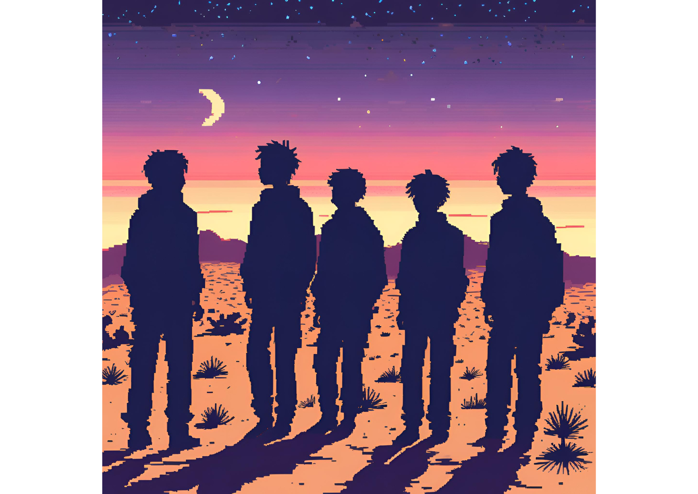

Rituals Of The UT It is an RPG style video game in which you can interact through a character whose main role is to be the guard of the University. The game allows you to advance through the map and search for answers to the noises and movements that disturb the facilities. In your journey, you will find various challenges and enigmas that you must solve to progress in the story. The game's atmosphere is designed to keep the player on constant alert, making each exploration a unique and exciting experience.
In addition to exploration and mystery solving, the game offers a number of side quests that enrich the main plot and allow the player to learn more about the University's secrets. As you improve your character's skills and unlock new areas of the map, each with its own challenges and surprises. The combination elements of suspense, adventure and strategy makes Rituals Of The UT an immersive and captivating gaming experience.
History
The guard, hearing the noises coming from Teaching 1, decides to investigate with his dog. As he gets closer, the noises become more intense and disturbing, as if they were ritual chants mixed with cries of pain. The tension increases when the guard discovers traces of blood leading to the basement of the building. Descending the stairs, the guard finds an abandoned room that appears to have been used for some kind of dark ritual. The walls are covered with satanic symbols and there are unlit candles everywhere. Suddenly, a shadow quickly crosses his field of vision. The guard, frightened but determined, continues to advance, guided by the moans and whispers echoing in the air. In the center of the room, he finds several students and teachers bound and gagged, surrounded by a group of hooded people. The hooded men are in the middle of a ritual, reciting words in an ancient language. The leader of the group, who has a sinister appearance with tattoos of satanic symbols on his face, becomes aware of the guard's presence and shouts orders to the others. An intense confrontation ensues. The guard uses all his skills and the dog attacks the hooded men, but is clearly outnumbered. However, with ingenuity and bravery, he manages to free some of the prisoners, who help fight the narco-satanists.
With the chaos unleashed, the guard and the freed prisoners manage to overpower several of the hooded men. However, the narco-satanic leader escapes, vowing revenge. The guard calls the police, who quickly arrive and arrest the remaining cult members. The police discover that the abandoned house near the UT is the narco-satanic headquarters. Upon searching the house, they find hard evidence connecting the cult to the disappearances. The rescued students and faculty are taken to the hospital for treatment, while the guard is hailed as a hero for his bravery. As news of the guard's heroic action spreads, UT tightens its security and investigations into the narco-satanic cult intensify. The guard, though scarred by the experience, is proud to have saved lives and determined to continue protecting his community. The narco-satanic leader is still at large, and although the immediate danger has been neutralized, the guard knows he must be ever vigilant, ready to face any threat that may arise in the future. The UT returns to normal, but the shadow of the narco-satanists still lingers, leaving a feeling of constant alertness in all those who witnessed the terrible events.

Maps
Map(Contains the territory of the UT with the 7 buildings) The map shows in detail the territory of the Technical University, including its 7 main buildings strategically distributed to facilitate access and orientation within the campus.
Main Buildings
The guard's house: The guard house is a small building located at the main entrance of the campus, equipped with surveillance cameras and a checkpoint to ensure the safety of all visitors and students.
Mysterious House: The Mysterious House is an old and abandoned building, full of legends and mysteries. Rumors say that inexplicable phenomena occur inside, making it an intriguing place for the more adventurous.
Interior of the UT Map (escape): The interior of the UT Map is designed for an interactive experience in which participants must use their wits and skills to escape various situations and challenges within a limited time.
Characters
UT Guard: The UT Guard is a key figure in charge of security throughout the university campus. Dressed in a distinctive uniform, he is always alert and patrolling the facilities to ensure the protection of students, staff and visitors. He knows every corner of the university and is prepared to deal with any emergency situation.
Students locked up: The Locked-In Students are non-playable characters (NPCs) who are trapped in different parts of the university. Each has their own story and reason for being trapped, and they need the player's help to be freed. Interacting with them can provide valuable clues and resources to advance in the game.

Narco-satanic: The Narcosatanics are a group of enemies who have taken control of certain areas of the campus. They are dangerous and armed, practicing dark rituals and illicit activities. Defeating them requires strategy and skill, as they are extremely violent and organized.
Nahuales: Nahuales are mystical and fearsome creatures, capable of transforming into animals and possessing supernatural powers. These enemies represent a unique challenge due to their changing abilities and their connection to ancient legends. Facing them requires not only physical strength, but also knowledge and preparation to counter their magical abilities.
Final-Boss
The Nahuales are the most fearsome and powerful creatures in the game, acting as the final boss summoned by the Narcosatanic. These mystical entities come from ancient Mesoamerican legends and possess the ability to transform themselves into diverse animals, such as jaguars, eagles or snakes, acquiring their abilities and strengths. They are guardians of arcane secrets and possess supernatural powers that defy the laws of nature.
When the Narcosatanics perform their dark ritual, they manage to summon a Nahual in its most powerful form, uniting its strength with the malevolent energy of the ritual. This final boss is not only formidable in melee combat, but can also manipulate the environment, creating illusions and traps to confuse and trap players. His abilities include momentary invisibility, powerful magical attacks and the ability to summon other lesser spirits to fight alongside him.
To defeat the Nahual, players must employ all their skills acquired throughout the game, as well as find and use special artifacts that can weaken his powers. The final battle is a test of strategy, bravery and perseverance, where every move counts and team coordination can be the key to victory.
The confrontation with the Nahual is the climax of the game, testing the player's limits and offering an intense and memorable experience. Defeating him not only restores peace to the campus, but also reveals the truth behind legends and secrets that have been hidden for generations.
Videogame development tool
GODOT is a general-purpose 2D and 3D game engine that allows you to create games or applications for desktop computers, mobile devices and the web. It is a software that facilitates the design, programming, debugging and testing of video games without the need to pay licenses or rely on other companies.
Elaboration of the video game
The team in charge of the development of the videogame Rituals Of The UT is MAQUINOS Project Software, a company dedicated to the creation of interactive experiences. This team is composed of developers, graphic designers, scriptwriters and sound specialists, all working together to bring to life a unique and challenging virtual world. With its experience in the video game industry, MAQUINOS Project Software strives to deliver quality products that capture the imagination of gamers.